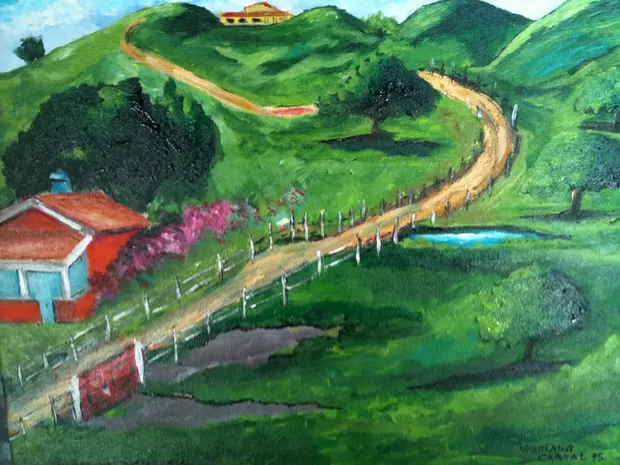
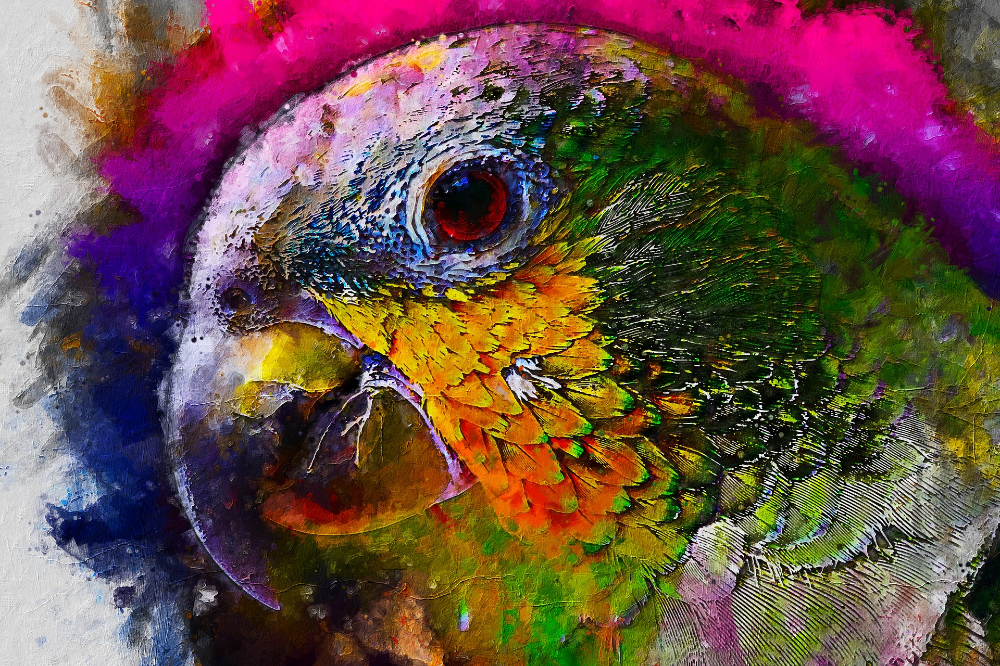
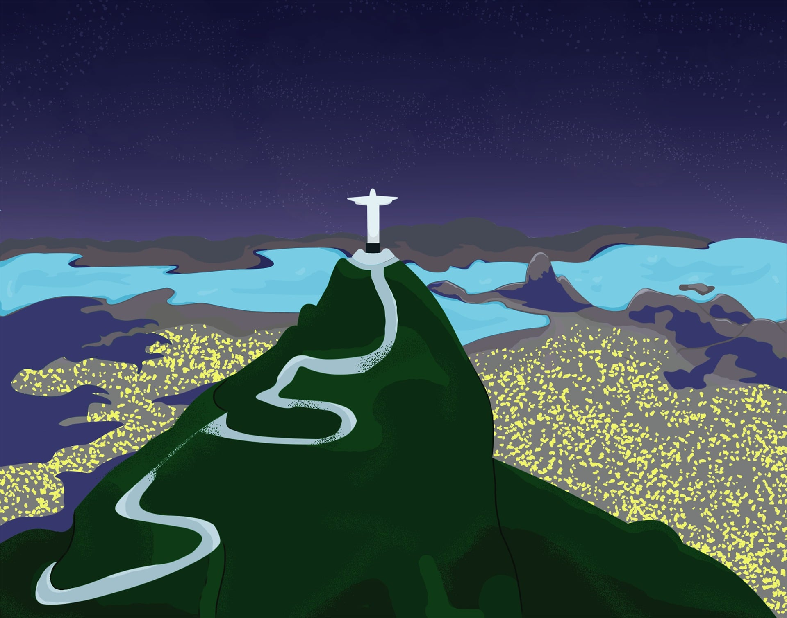
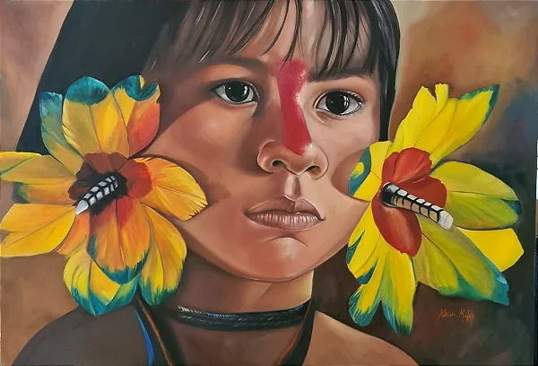
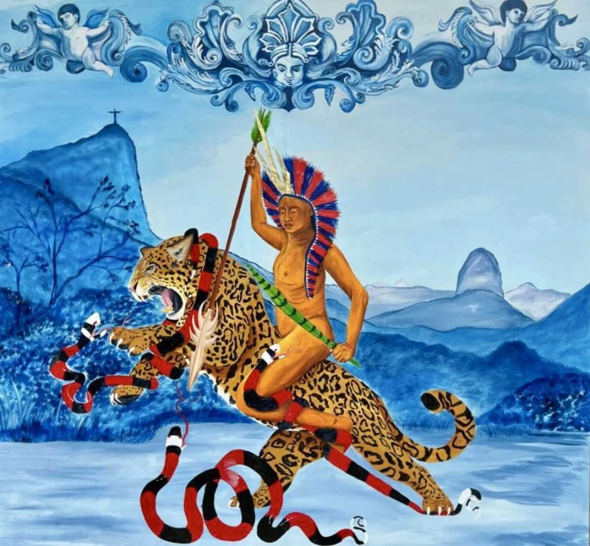
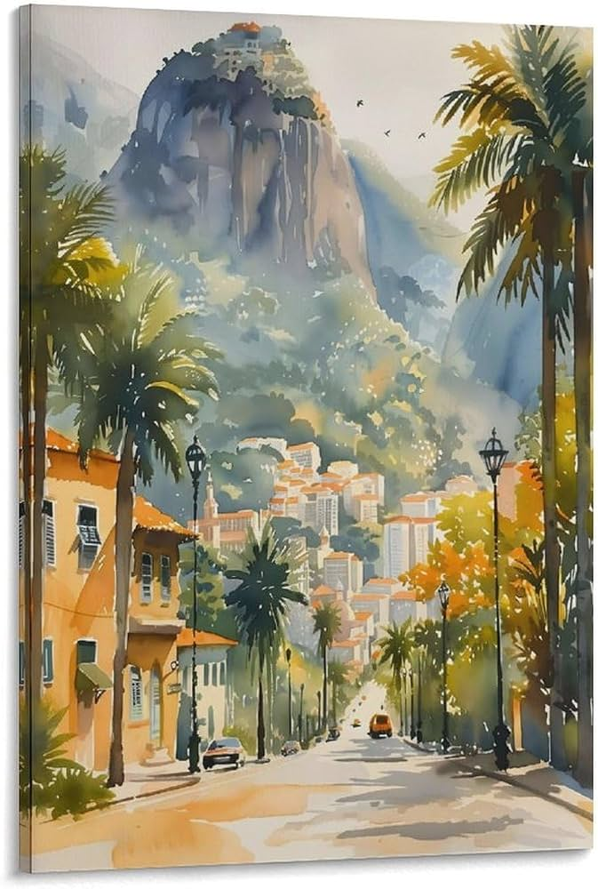

Sobre a Pintura Brasileira
A pintura brasileira representa a diversidade do Brasil através de suas paisagens, culturas, pessoas e histórias. Ao longo do tempo, diferentes artistas utilizaram a pintura para representar as características do nosso país. As obras brasileiras podem mostrar diferentes regiões e aspectos da vida no Brasil, como as paisagens da Amazônia, o Cerrado, o Pantanal, o litoral, as cidades e as manifestações culturais de diferentes povos. A arte também ajuda a preservar a memória e a identidade brasileira, registrando costumes, lugares e acontecimentos importantes. Dessa forma, a pintura se torna uma maneira de conhecer e valorizar a diversidade cultural do Brasil.
Galeria de Pinturas






Brasil em Telas
O Brasil possui uma grande diversidade de paisagens, regiões e culturas. As pinturas podem representar a Amazônia, o Nordeste, o Cerrado, o Pantanal, as cidades e muitos outros elementos que fazem parte da identidade brasileira.
Cada região possui características próprias, que podem ser representadas através das cores, das paisagens, da arquitetura e das manifestações culturais. As obras também podem retratar diferentes momentos da história e do cotidiano da população brasileira.
O projeto Brasil em Telas busca apresentar essa diversidade por meio de imagens e pinturas, mostrando como diferentes lugares e culturas podem fazer parte de uma mesma identidade nacional.